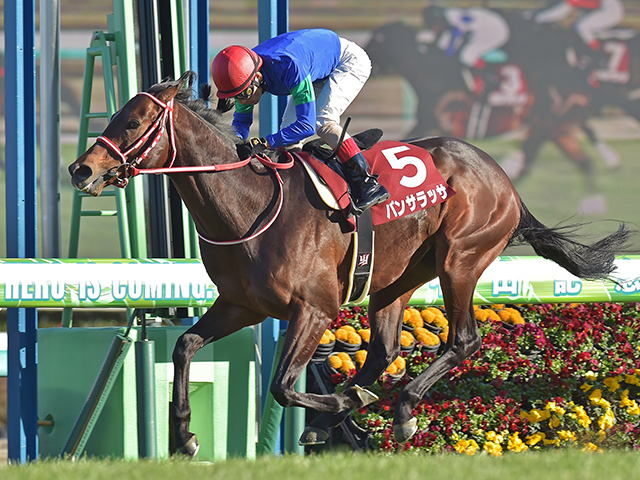

「世界の逃亡者」芝ダート両方の海外G1制覇
パンサラッサ

ロードカナロア産駒として2017年生まれ。下級条件で鳴かず飛ばずだった時期を経て、吉田豊騎手との大逃げスタイルを確立。2022年ドバイターフで日本馬として初のGI制覇を果たし、2023年には世界最高賞金レース「サウジカップ」を日本調教馬として初制覇。芝・ダート双方の海外G1を制した唯一無二の逃亡者として、世界の競馬ファンにその名を刻みました。
基本データ
- 主な鞍上： 吉田 豊
- 獲得賞金： 約3億1365万円（中央）＋海外賞金
- 通算成績： 21戦6勝
- 脚質： 逃げ（大逃げ）
- 調教師： 矢作芳人（栗東）
-
血統（父母）：
- ロードカナロア
- ミヤビランベリ
能力パラメータ
※独自解析による競走能力アーカイブ
全戦績
| 年 | レース名 | 着順 | 着差 | 鞍上 |
|---|---|---|---|---|
| 2020 | 新馬戦（阪神・芝1600m） | 6着 | — | 坂井瑠星 |
| 2020 | 未勝利（阪神・芝2000m） | 2着 | — | 坂井瑠星 |
| 2020 | 未勝利（京都・芝2000m） | 1着 | 大差 | 坂井瑠星 |
| 2020 | エリカ賞 | 6着 | — | 坂井瑠星 |
| 2020 | ホープフルS（G1） | 6着 | — | 坂井瑠星 |
| 2021 | 若駒S | 4着 | — | 坂井瑠星 |
| 2021 | 弥生賞ディープインパクト記念（G2） | 9着 | — | 坂井瑠星 |
| 2021 | 3歳上1勝クラス（阪神・芝2000m） | 1着 | — | 吉田豊 |
| 2021 | ラジオNIKKEI賞（G3） | 2着 | — | 吉田豊 |
| 2021 | 神戸新聞杯（G2） | 12着 | — | 吉田豊 |
| 2021 | オクトーバーS（L） | 1着 | アタマ | 吉田豊 |
| 2021 | 福島記念（G3） | 1着 | 4馬身 | 菱田裕二 |
| 2022 | 中山記念（G2） | 1着 | — | 吉田豊 |
| 2022 | ドバイターフ（G1） | 1着 | 同着 | 吉田豊 |
| 2022 | 宝塚記念（G1） | 8着 | — | 吉田豊 |
| 2022 | 札幌記念（G2） | 2着 | — | 吉田豊 |
| 2022 | 香港カップ（G1） | 10着 | — | 吉田豊 |
| 2022 | 天皇賞・秋（G1） | 2着 | — | 吉田豊 |
| 2023 | サウジカップ（G1） | 1着 | — | 吉田豊 |
| 2023 | ドバイワールドC（G1） | 10着 | — | 吉田豊 |
| 2023 | ジャパンC（G1） | 12着 | — | 吉田豊 |
主な産駒（子供たち）
- 2025年初年度産駒誕生予定
- 種付け料：300万円（2024年）
- シャトル種牡馬としてオーストラリア・ユーロンスタッドでも供用
※2024年よりアロースタッドで種牡馬として供用開始
伝説の瞬間：2023年サウジカップ「世界最高賞金、逃げ切り」
世界最高賞金レースのサウジカップ（賞金総額約20億円）で、日本調教馬として初制覇。スタートから先手を取り、持ち前の大逃げで後続を引き離す鮮やかな逃げ切りは世界を驚かせました。芝のドバイターフに続きダートの頂点も制し、芝・ダート双方の海外G1を制覇した唯一の日本馬として歴史に名を刻みました。